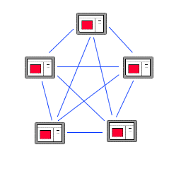
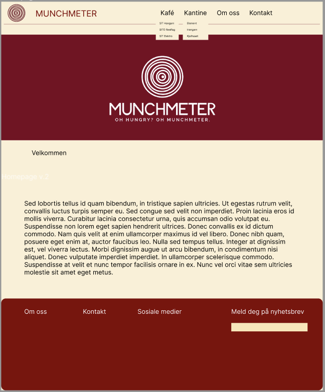

P1 Project Requirements
Markus, Adele, Sylvia, Helle, Jennica og Odin
IT2805, sep 28, 2023
Client Name: Ola Norman
Website Name: MunchMeter
Contact person:
Målet med å lage en nettside for Ola Nordmann, en andreårsstudent innen bioteknologi ved NTNU i Trondheim, er å hjelpe ham med å takle hans ustrukturerte og ubesluttsomme natur når det gjelder valg av kantine eller kafé på Gløshaugen campus. Hensikten er å gi Ola en enkel og effektiv løsning for å finne ut hvilken spisested som tilbyr det beste matutvalget på campus. Dette vil spare Ola verdifull tid og energi, som han ellers bruker på studier og helgejobbing, samt på å utforske naturen rundt Trondheim på fjellturer. Ved å tilby en oversikt over kantina, kiosken og kafeene på Gløshaugen med vurderinger, menyer og åpningstider, kan nettsiden hjelpe Ola med å ta raske og informerte beslutninger om hvor han skal kjøpe mat, slik at han kan optimalisere studieopplevelsen sin og fritiden sin på en mer balansert måte.
Navigasjonsstrukturen på nettsiden til Olav Nordmann kan beskrives som en "klikke". På denne nettsiden er alle sidene koblet sammen på en måte som gjør det enkelt å få tilgang til alle sidene fra hjemmesiden, og omvendt, det er mulig å komme til hjemmesiden fra hver side gjennom bruk av navigasjonsmenyen. Selv om lenkene for hver nettside ikke er synlige før de pekes på, er de inkludert på hver side. Årsaken til at vi valgte en klikke-struktur er å gi brukeren så mye frihet som mulig på nettsiden og å gjøre ham/henne oppmerksom på den generelle strukturen og innholdet på nettsiden uten å vise alt. For eksempel kan en bruker på siden Kantine.html enkelt få tilgang til underordnede sider innen andre kategorier, som for eksempel Kafe.html-siden, ved å bruke den enkle rulle-menyen.
Navigasjonbaren ligger øverst på nettsiden og har bakgrunnfarge #FDF0D5, og tekstfarge #800020 og svart. I tillegg blir den gjennomsitkig når man scroller ned på siden. Vi har laget en logo med navn: MunchMeter som er plassert øverst til venstre i navigasjonsbaren. Vi har også med logoen i bilde-slideshowet med slogan: Oh hungry? Oh munchmeter. Footer har farge #800020 og inneholder litt om oss, kontakter, sosiale medier og å melde seg på nyhetsbrev til nettsiden. Bildene vi skal bruke skal være i et slideshow som går gjennom alle bildene av kaféne og kantinene, og på hver nettside til hver kantine/kafé skal det vises bilder av maten som serveres. Vi valgte å bruke fargen #800020, rød, fordi rød gjør så du får appetitt. #FDF0D5, gulfargen, ble valgt fordi den passet bra med rødfargen og gjorde siden mer livlig. Utseende er generelt nokså tiltrekkende slik at studentene ønsker å klikke inn.
Hjemmsiden skal være den første siden brukeren kommer til når den trykker inn på nettsiden. Det skal være en introduksjon til hva som kan forventes av nettsiden og hva den handler om. Øverst skal det ligge en navigasjonsbar som brukeren enkelt kan bruke til å gå videre til andre deler av hele nettsiden - andre sider til hver kafe eller kantine som finnes på Gløshaugen. Under navigasjonsbaren skal det være et slideshow med bilder av de forskjellige kantinene og kafeene på Gløshaugen for å gjøre det interassent for brukeren, og eventuelt så interessant at brukeren ønsker å fortsette videre/dypere inn i nettsiden og dens funksjoner. Under der igjen skal det stå en slags velkomst til nettsiden og litt generell informasjon om hva nettsiden går ut på, altså anmeldelser av mat og kantiner/kafeer på Gløshaugen. Nederst skal det være en footer med informasjon om oss, kontakter, sosiale medier og å melde seg på nyhetsbrev om man ønsker litt ekstra informasjon etter hvert som det kommer ut.
All of the following files will be gathered inside a folder nannan which will be created in the coding phase of the project.
list of all Files and Folder